180 Меридиан
В рамках подготовки Владивостока к Восточному экономическому форуму 2025 был создан масштабный световой арт-объект, посвящённый 180-му меридиану — символической границе между сегодня и завтра.
ВЭФ 2025 · около 3 метров
Символика
Образ объекта отсылает к уникальной географии Дальнего Востока. 180-й меридиан проходит через Чукотку и условно разделяет Восточное и Западное полушария.
Это место, где заканчивается один календарный день и начинается следующий — поэтому круглая световая композиция стала визуальным образом границы между настоящим и будущим.
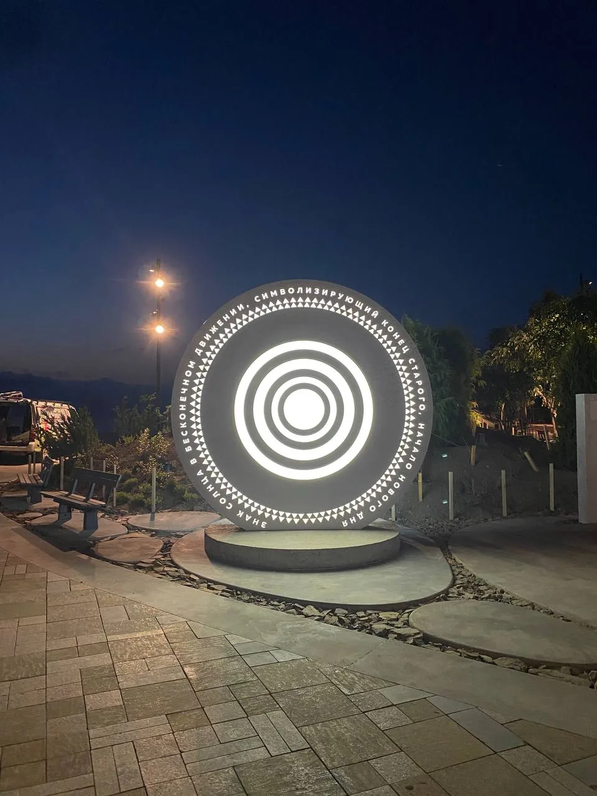
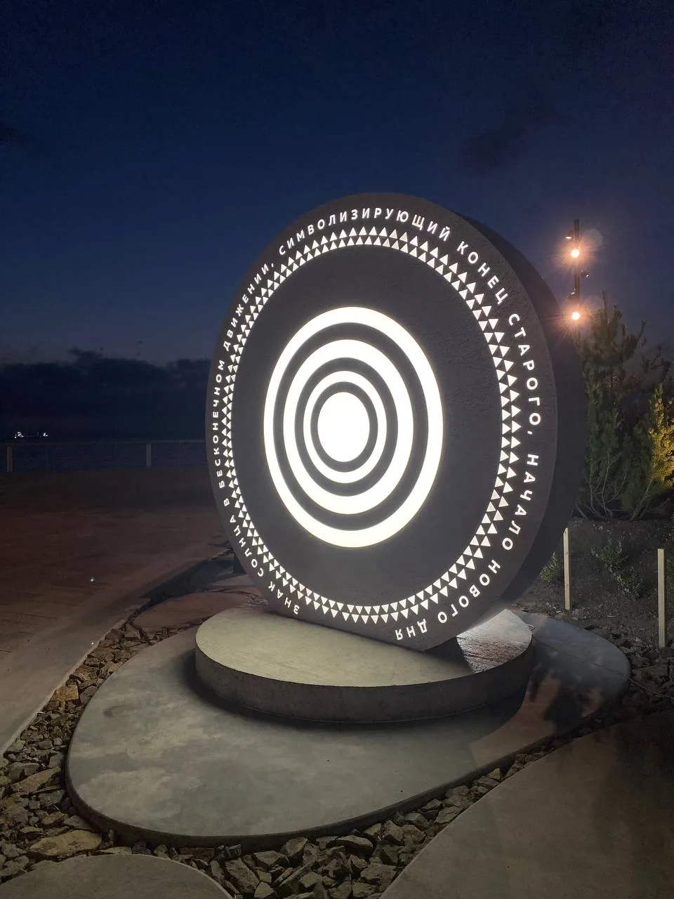
Каркас и основание
В основе объекта — пространственный сварной металлический каркас. Он формирует большую круговую геометрию и воспринимает нагрузку от облицовки и световых элементов.
Для устойчивости массивное основание конструкции армировали и залили бетоном. На фотографиях хорошо видно, как постепенно из металла и бетона появляется будущая форма объекта.
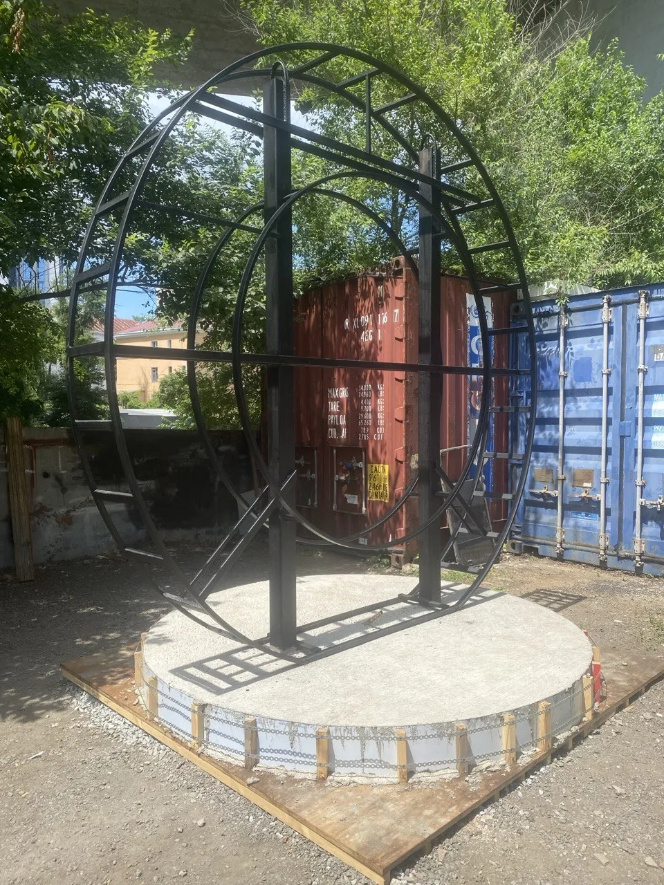
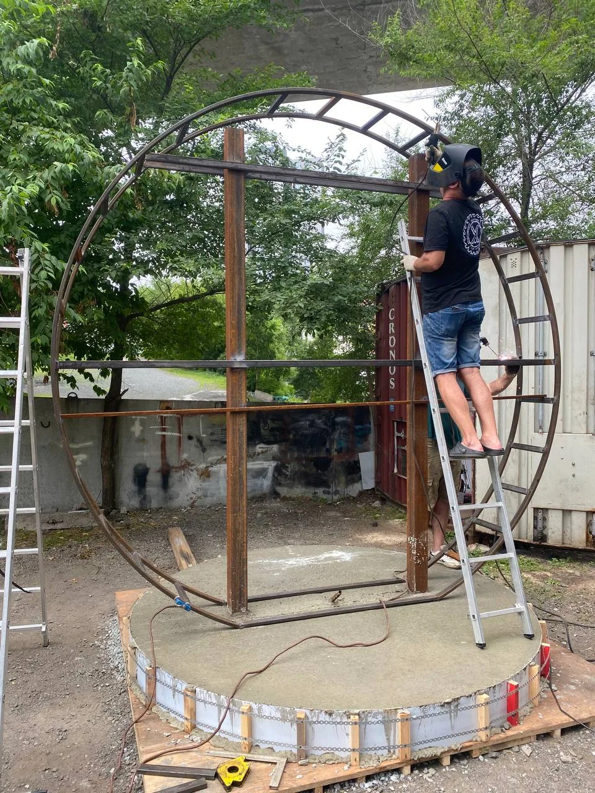
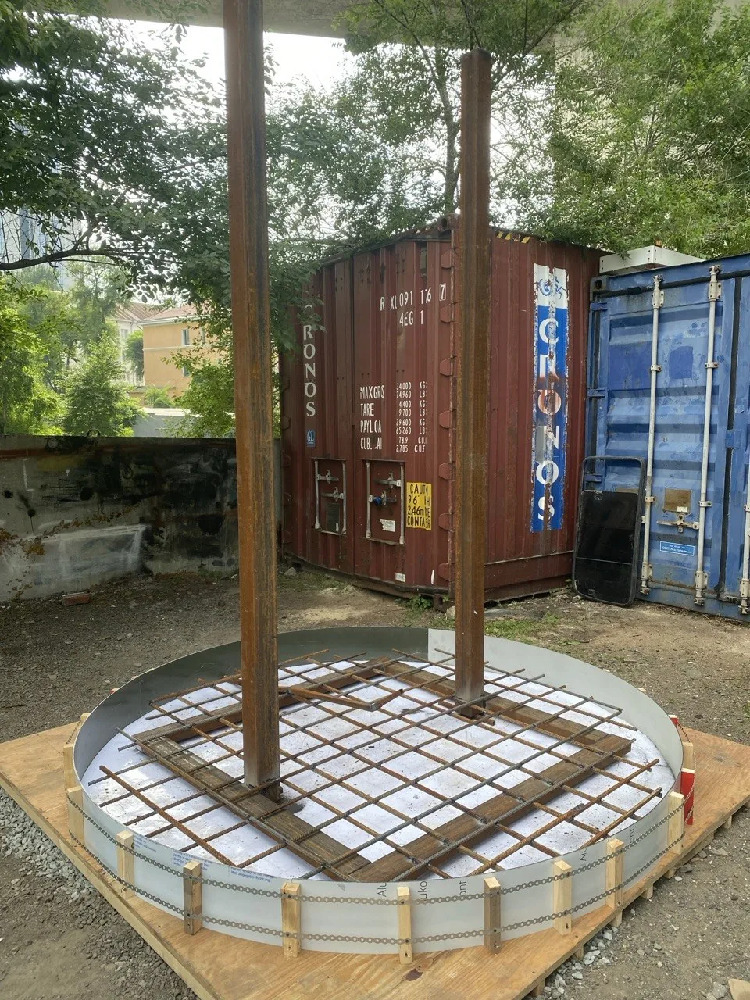
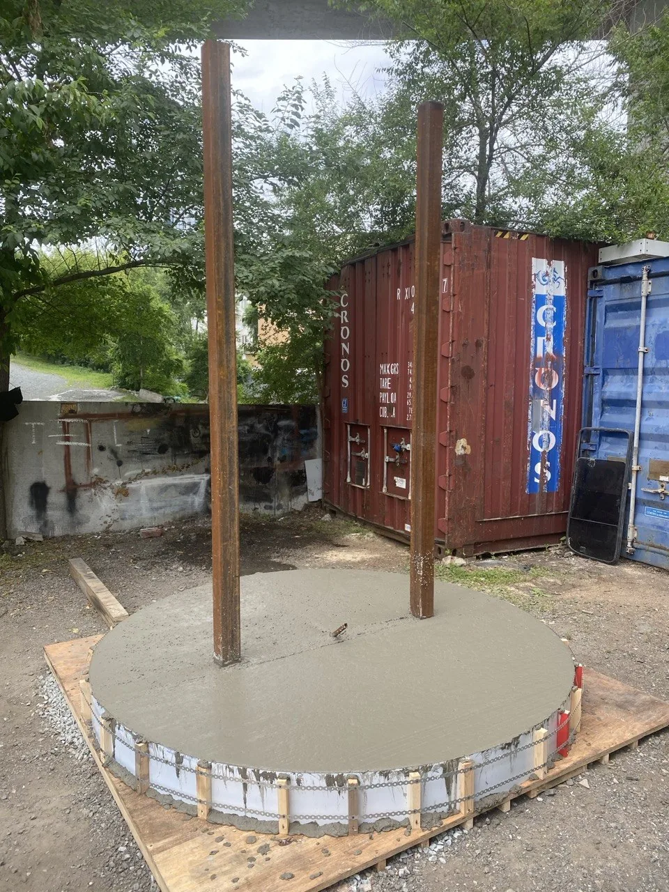
Облицовка и свет
После изготовления силовой конструкции объект обшили алюминиевым композитом с полноцветной печатью.
Световые линии выполнены методом инкрустации молочным оргстеклом. За ним разместили светодиодную подсветку, благодаря которой концентрические окружности ночью читаются как единый яркий графический знак.
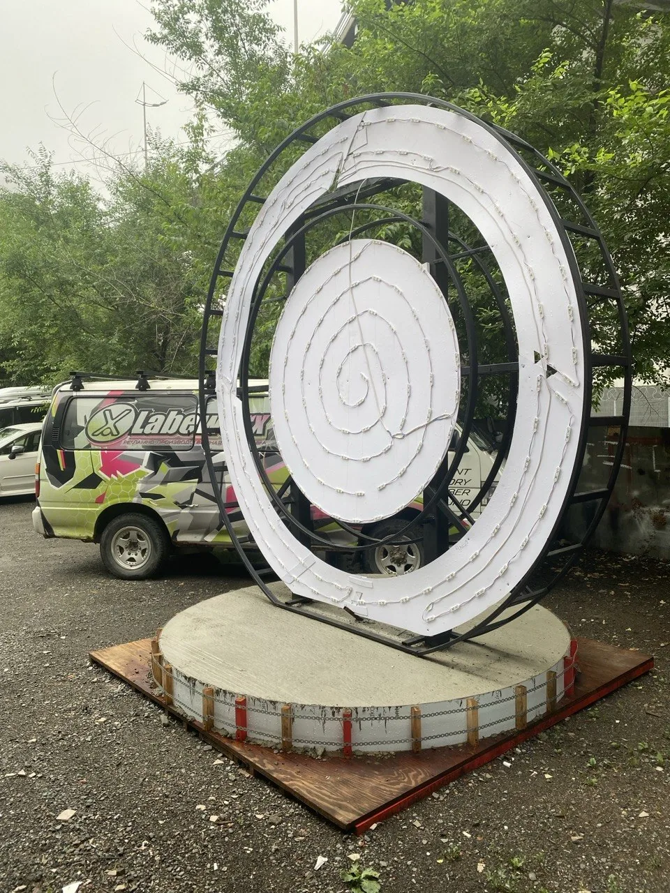
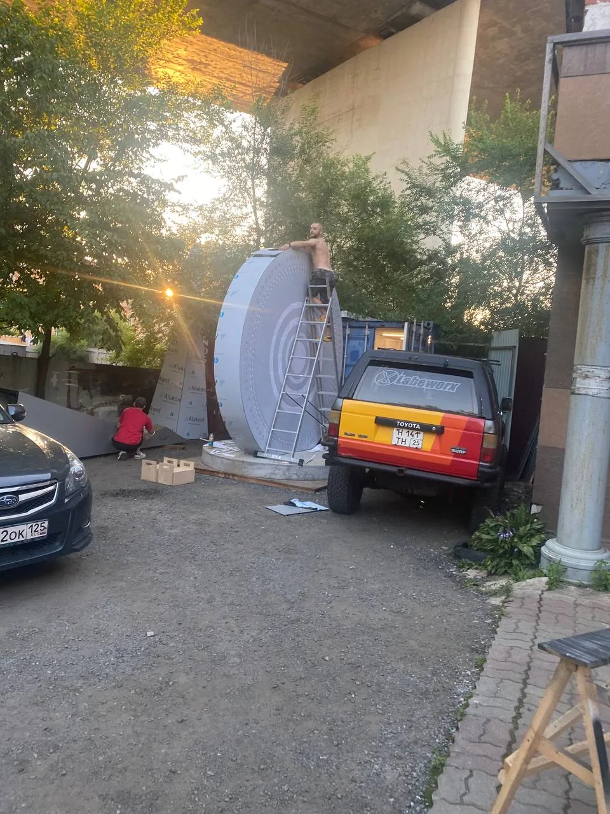
Монтаж
Готовая конструкция требовала аккуратной перевозки и установки уже как единый крупный объект. Для позиционирования использовали подъёмную технику.
Финальной точкой стала установка на Спортивной набережной Владивостока, где объект работает и днём, и после наступления темноты.
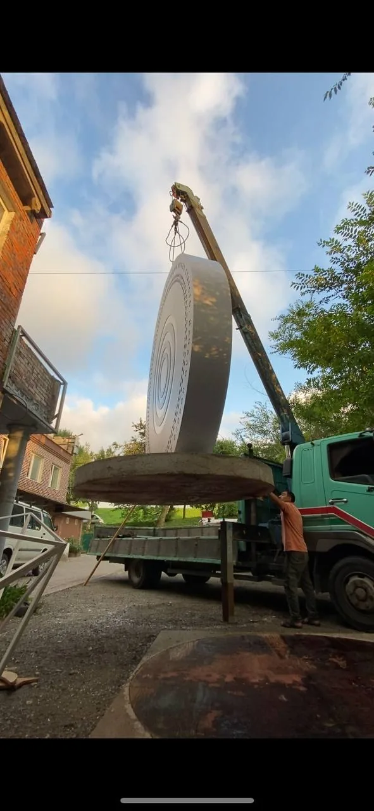
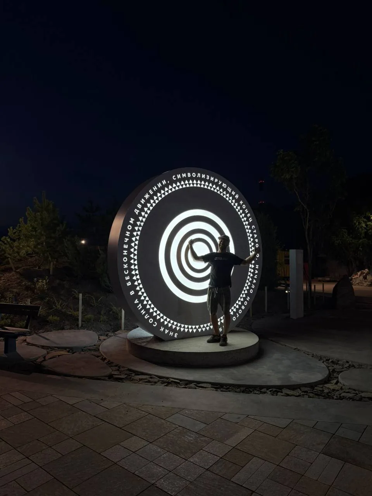
День / ночь
Днём «180 Меридиан» воспринимается как лаконичная архитектурная форма. Но с наступлением темноты объект раскрывается полностью: загораются концентрические световые линии и превращают его в заметный городской ориентир.
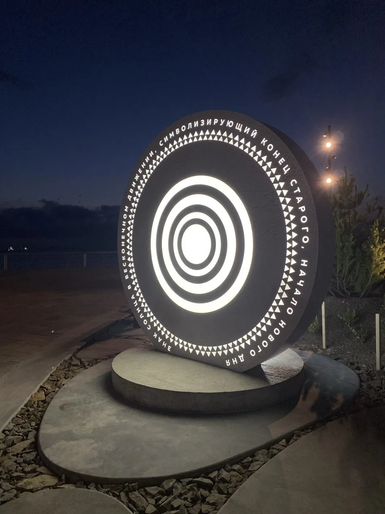